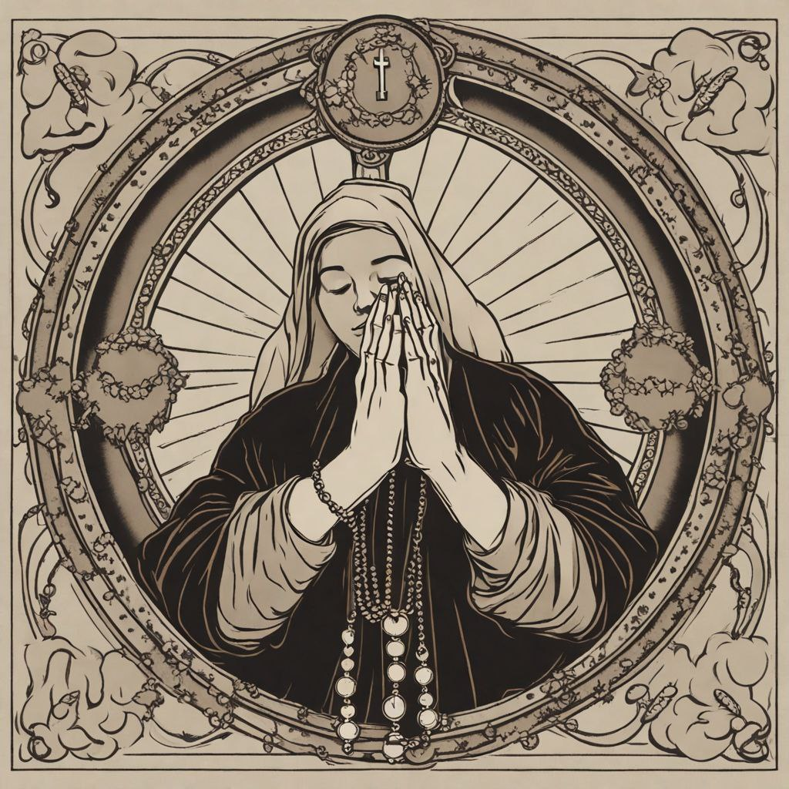

Doa Katolik Bahasa Jawa
Sugeng Rawuh
TANDHA PAMENTHANGAN
Konjuk ing Asma Dalem Hyang Rama, saha Hyang Putra, Tuwin Hyang Roh suci. Amin.
Daftar Doa

Menu Doa
Daftar Doa
Rama Kawula
Sembah Bekti
Mugi Linuhurna
Pinujia
Kawula Pitados
Sembahyang Katur Hyang Roh Suci
Malaekating Allah
Ratu Swarga
Sembahyang Penyerahan Katur Kulawarga Suci